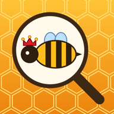

女王蜂さがし の使い方巣板をスマホのカメラで映すと、女王蜂を見つけて黄色い枠で示すアプリです。 内検のときに、女王蜂を探す手助けとして使ってください。
はじめに
- Wi-Fi のある場所で一度開いてください。最初に約 70 MB を読み込みます。2 回目からは通信しないので、巣箱の前（圏外）でも使えます。
- 「カメラで開始」を押し、カメラの使用を許可します。
- 巣板を映します。女王蜂が見つかると、画面上部が赤くなって「女王蜂発見！」と表示され、画面の縁が点滅して音が鳴ります。
| 端末 | おすすめのブラウザ |
|---|---|
| iPhone | Safari（iOS 26 以降。それより前だと動作が遅くなります） |
| Android | Chrome |
| パソコン | Chrome / Edge / Safari の最新版（カメラがなければ「動画ファイルで試す」） |
解析は、お使いの端末の GPU で行います。端末やブラウザが GPU に対応していない場合は CPU で動きますが、遅くなります。
ホーム画面に追加（おすすめ）
アプリのように全画面で使え、アイコンからすぐ起動できます。
- iPhone: Safari の共有ボタン（□に↑）→「ホーム画面に追加」→「追加」
- Android: Chrome の右上の ⋮ →「ホーム画面に追加」（または「アプリをインストール」）
画面の見かた
- 上部の帯
- ふだんは「巣板を映してください」。女王蜂を見つけると赤くなります。右側は、見つけた女王蜂の確信度、 1 秒あたりの解析回数（fps）と 1 回の解析時間（ms）、直近のフレームで検出された回数です。
- 黄色い枠
- 女王蜂と判断した場所と確信度。確信度が低い枠は、働き蜂や雄蜂を間違えていることもあります。最後は必ず目で確認してください。
- 💡 ライト
- カメラのライト。端末・ブラウザが対応しているときだけ表示されます。
- ズーム
- 押すたびに 1x → 2x → 3x。2 本指でつまんでも変えられます。ズームすると小さく写った女王蜂も見つけやすくなります。
- ⚪ シャッター
- 枠が付いた今の画面を「記録」に残します。
- ⏺ 自動記録
- オン（黄色）にすると、女王蜂を見つけたときに自動で「記録」に残します。最初はオフです。
- 🖼 記録
- 残した画像の一覧。写真アプリへの保存や共有はここから（画像を残す）。
- ⚙︎ 設定
- 見つける感度などを変えられます（設定）。
うまく見つけるコツ
- 巣板から 20〜40 cm くらい離し、巣板の一部を画面いっぱいに映します。遠すぎると女王蜂が小さくなって見逃します。
- スマホをゆっくり動かします。速く動かすとぶれて見つけにくくなります。
- 日陰や逆光で暗いときは、ライトや、巣板の向きを変えて明るくします。
- 巣板の両面を見ます。女王蜂は卵や若い幼虫のある場所の近くにいることが多いです。
- 苦手なこと: 他の蜂に隠れているとき、頭を巣房に入れて産卵中のとき。また、背中にマーキング（色の点）のない女王蜂は、見つけにくいことがあります。
画像を残す
シャッターや自動記録で残した画像は、まずこのアプリの中の「記録」に入ります（ブラウザの制限で、写真アプリへ直接は保存できません）。
- 🖼「記録」を開く
- 1 枚なら画像を押して「共有・保存」、全部なら「まとめて共有」
- iPhone では共有シートの「画像を保存」で写真アプリに入ります。LINE やメールで送ることもできます。
「記録」の画像は、ブラウザのサイトデータを消したり、長い間アプリを開かなかったりすると消えることがあります。残したい画像は写真アプリに保存してください。
設定
| 項目 | 説明 | 最初の値 |
|---|---|---|
| しきい値（確信度） | これより確信度の低い候補は無視します。誤検出が多いときは上げる（例 0.30〜0.50）、見逃すときは下げる。 | 0.15 |
| 「発見」の判定 | 直近の「フレーム数」のうち「必要な回数」以上で検出されたら「女王蜂発見！」にします。回数を増やすと、一瞬の誤検出で騒がなくなります。 | 20 中 1 |
| 自動記録の間隔 | 見つけ続けている間、何秒ごとに 1 枚記録するか。 | 9 秒 |
| 音・振動 | 見つけたときに知らせるか。振動は Android のみ。iPhone はマナーモードだと音が鳴らないことがあります。 | 音 オン 振動 オフ |
| 推論の回数 | 1 秒あたりの解析回数の上限。端末が熱い・電池の減りが早いときは 5 くらいに下げます。 | 上限なし |
| 推論に使うもの | ふつうは「自動」のまま。変えたら、ページを読み込み直すと切り替わります。 | 自動 |
「初期値に戻す」で上の値に戻ります。
困ったとき
- カメラが映らない・「許可されていません」と出る
- iPhone:「設定」アプリ →「Safari」→「カメラ」を「確認」か「許可」に。ホーム画面から開いている場合は、一度アプリを閉じて開き直してください。
Android: アドレスバー左のアイコン →「権限」→ カメラを許可。 - 動きが遅い（fps が小さい）
- 最初の画面の「推論:」が CPU になっていたら、端末・ブラウザが GPU に対応していません。iPhone は iOS 26 以降に更新してください。 GPU なのに遅いときは、他のアプリを閉じる・端末を冷ますと改善することがあります。
- 端末が熱くなる
- 設定の「推論の回数」を 5 fps くらいに下げてください。
- 何もないところに枠が出る／女王蜂がいるのに出ない
- 設定の「しきい値」を上げる／下げる。ズームや距離を変えるのも効果があります。
- 他のアプリから戻ったら映像が止まった
- 画面を一度タップするか、⚙︎ 設定 →「最初の画面へ」→「カメラで開始」で再開します。
- 新しい版にしたい
- ネットにつながる場所でアプリを開くと、自動で新しい版になります（反映されないときは一度閉じて開き直す）。
データの扱い
- カメラの映像はこの端末の中だけで解析し、どこにも送りません。
- 通信するのは、アプリ本体と解析用のモデルを最初に読み込むとき（と更新のとき）だけです。
- 「記録」の画像と設定は、この端末のブラウザの中だけに保存されます。
女王蜂さがし — ソースコード（AGPL-3.0）。 学習データの出典は CREDITS.md。
アプリに戻る